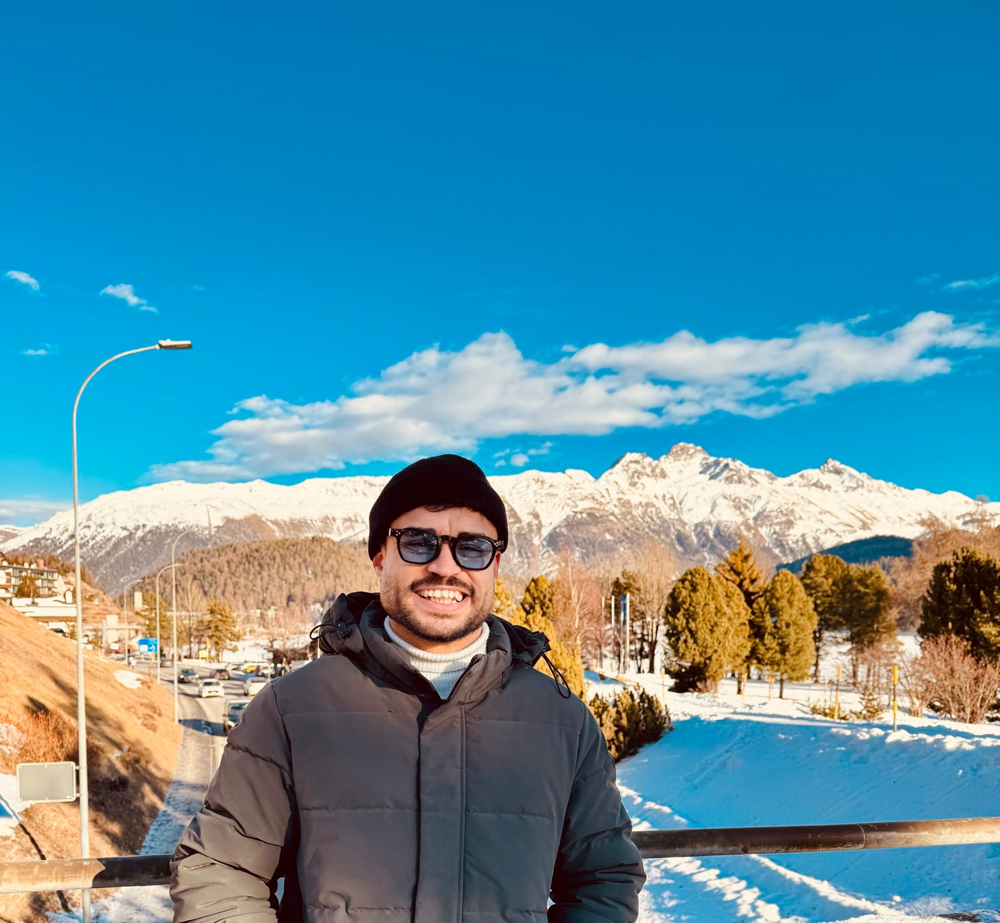
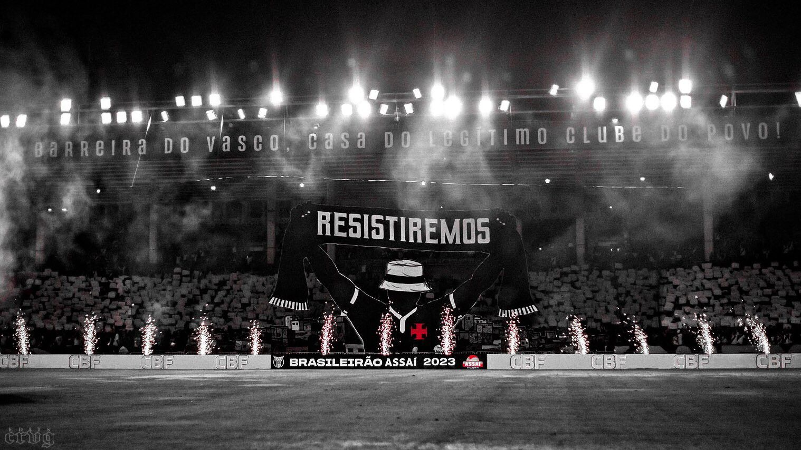
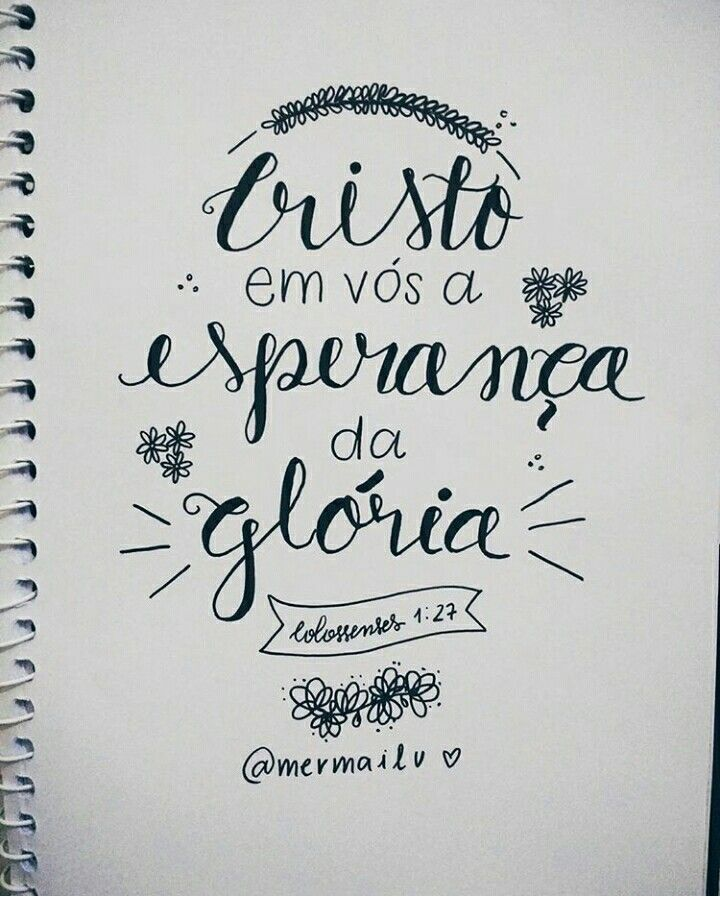

Aqui voce poderá ver alguns dos meus projetos.
Projetos desenvolvidos para o chatgpt.
Meus projetos

Vasco da Gama
Futebol na cultura - o esporte mostrado como uma ferramenta poderosa de conscientizaçao e transformaçao social.

Conscientizaçao de classe
Nossa luta nao é uns contra os outros e sim contra um sistema que tenta oprimir aqueles que sao diferentes.

A esperança da glória
A mudança que queremos ver no mundo está diretamente ligada ao quanto de Crsito vive através de nós.
Vasco da Gama
Futebol na cultura - o esporte mostrado como uma ferramenta poderosa de conscientizaçao e transformaçao social.
Conscientizaçao de classe
Nossa luta nao é uns contra os outros e sim contra um sistema que tenta oprimir aqueles que sao diferentes.
A esperança da glória
A mudança que queremos ver no mundo está diretamente ligada ao quanto de Crsito vive através de nós.